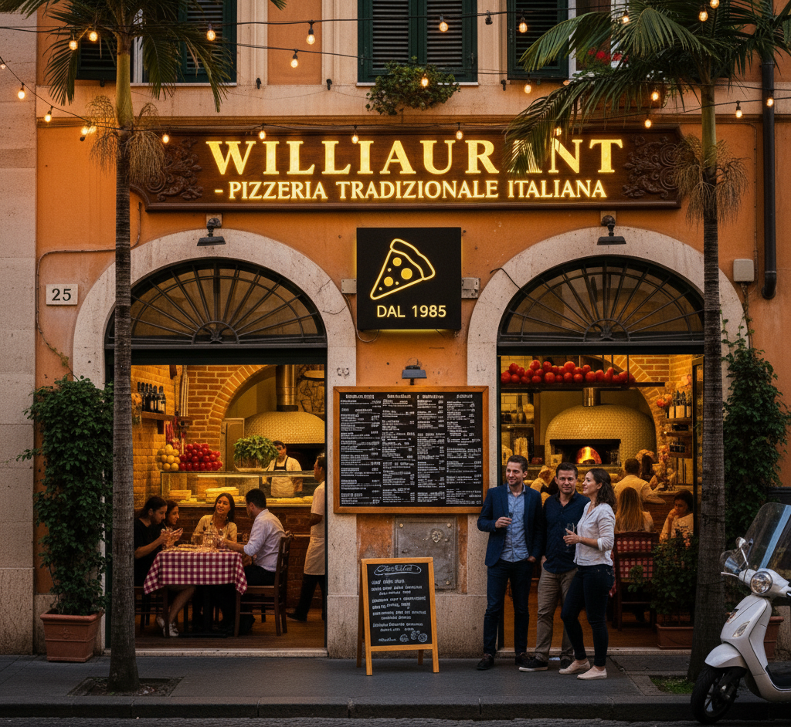

Williaurant
Fundado em 1985, o Williaurant é uma pizzaria italiana renomada na orla de Boa Viagem, Recife – PE. Reconhecido pela massa artesanal e ingredientes selecionados, o restaurante une a autenticidade das receitas italianas ao toque acolhedor pernambucano. Com quase quatro décadas de história, o Williaurant se tornou um ícone gastronômico, ideal para momentos especiais, unindo tradição, sabor e sofisticação à beira-mar.
Nossos diferenciais:
- Ingredientes frescos
- Música ambiente
- Bom atendimento
- Rápida entrega